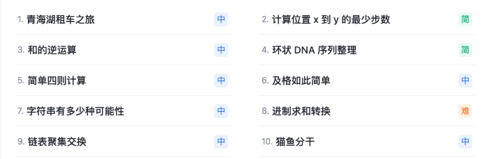

1.11 算法代码练习
アルゴリズムコード練習 アルゴリズムのレベルを向上させるには、実践的なプログラミングが鍵となります。これまで開発者がコードを独学する際には、複雑な手順や小さなバグに悩まされることがよくありました。豆包 Marscodeの【コード練習】ボード...

1.10 基数排序
基数ソート（Radix Sort）は、比較を利用しない非比較型のソートアルゴリズムであり、要素の各桁を（最下位桁から最上位桁まで）1桁ずつ比較することでソートを実現します。基数ソートの核となる考え方は、整数を...

1.9 桶排序
バケットソート（Bucket Sort）は、分散型ソートアルゴリズムであり、ソート対象の要素を複数のバケット（Bucket）に分配し、各バケット内の要素をソートしてから、最後にすべてのバケット内の...

1.8 计数排序
計数ソート（Counting Sort）は、比較を利用しない非比較型のソートアルゴリズムであり、整数や有限範囲内のデータのソートに適しています。その核となる考え方は、各要素の出現回数を統計することによって...

1.7 堆排序
ヒープソート（Heapsort）は、ヒープというデータ構造を利用して設計されたソートアルゴリズムです。ヒープはほぼ完全二分木の構造であり、同時にヒープの性質を満たします：すなわち、子ノードのキー値または...

1.6 快速排序
クイックソート（Quick Sort）は、分割統治法（Divide and Conquer）の考え方に基づく効率的なソートアルゴリズムです。その核心は、基準要素（pivot）を選択し、リストを分割することです。

1.5 归并排序
マージソート（Merge sort）は、マージ操作に基づいて構築された効率的なソートアルゴリズムです。このアルゴリズムは、分割統治法（Divide and Conquer）を採用した非常に典型的な応用例です。

1.4 希尔排序
シェルソート（Shell Sort）は、挿入ソートの改良版であり、縮小増分ソートとも呼ばれます。ソート対象のリストを複数のサブリストに分割し、各サブリストに対して挿入ソートを行い、段階的に...

1.3 插入排序
挿入ソート（Insertion Sort）は、シンプルで直感的なソートアルゴリズムであり、その動作原理はトランプのカードを整理することに似ています。挿入ソートは、整列済みのシーケンスを構築し、未ソートのデータに対して、整列済みの...

1.2 选择排序
選択ソート（Selection Sort）は、シンプルで直感的なソートアルゴリズムであり、どのようなデータであっても時間計算量は O(n²) です。そのため、使用する際はデータ規模が小さいほど良いです。唯一...
- 1
- 2
- 全2ページ